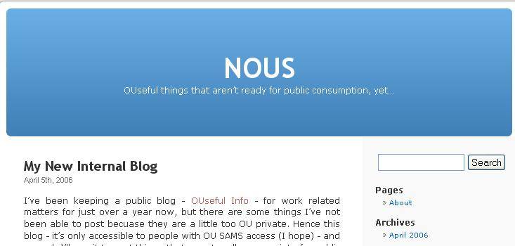

For those readers who OU members of staff with SAMS access, I have just started a new internal blog - NOUS - for posting items that are not really appropriate for a public audience.

I'm not sure what the posting frequency will be, or what I'm going to post there, but it will potentially be a little more controversial and corporate foolish than the stuff I post to this public blog...
Likely subject areas are an outsider's view of the VLE and OCI projects, OU hacks, and annotated to links to OU internal services.
OUseful Info will continue in its current form...
Posted by ajh59 at April 5, 2006 08:27 PM